Complete Slide Portfolio
All portfolio content in one place
This gallery preserves every slide from the original portfolio. The final contact slide and downloadable files have been prepared without a phone number.
Click any slide to enlarge it. The structured Experience and Projects pages provide easier-to-read explanations, while this page includes the complete original slide content.
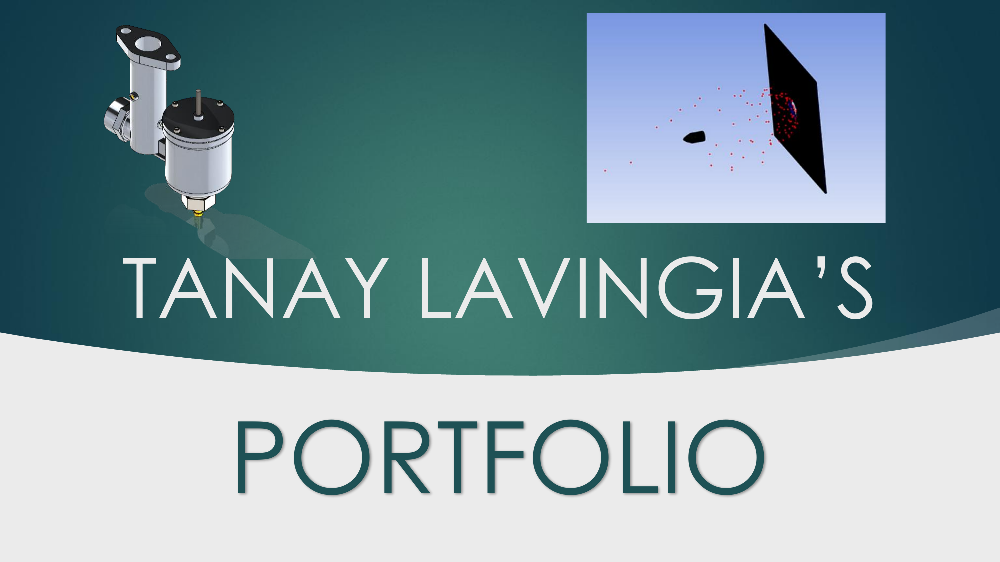
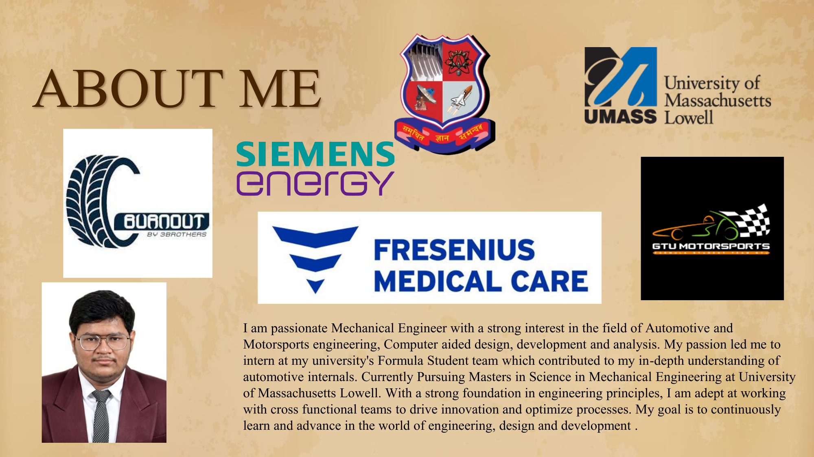
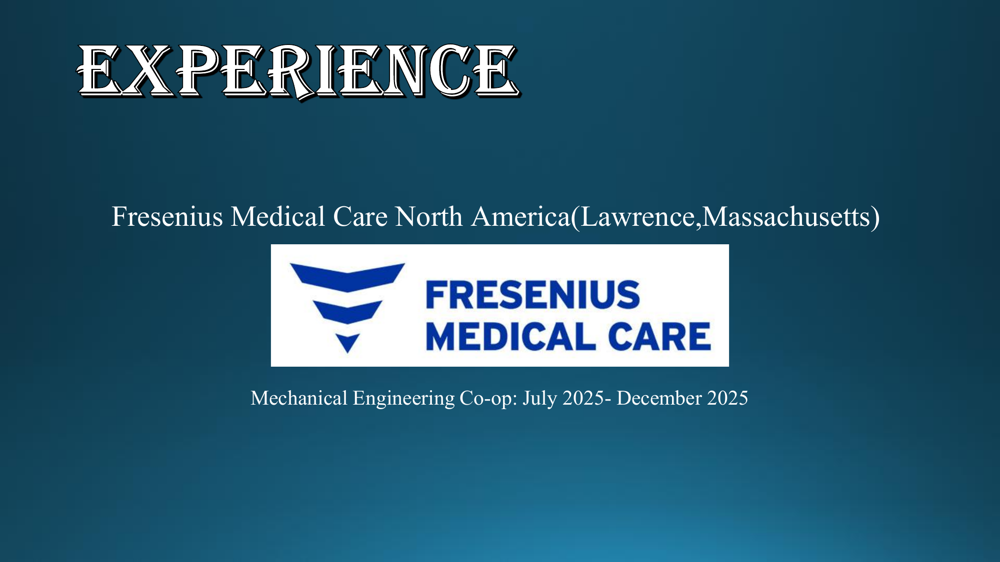


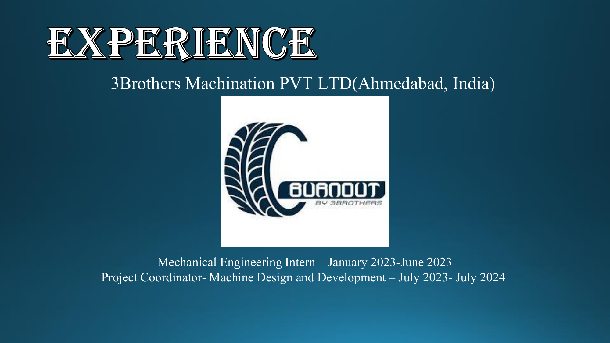


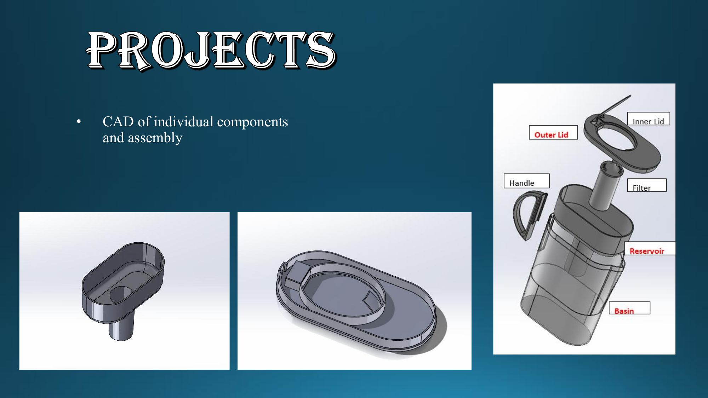
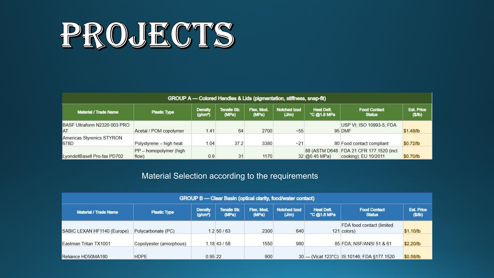
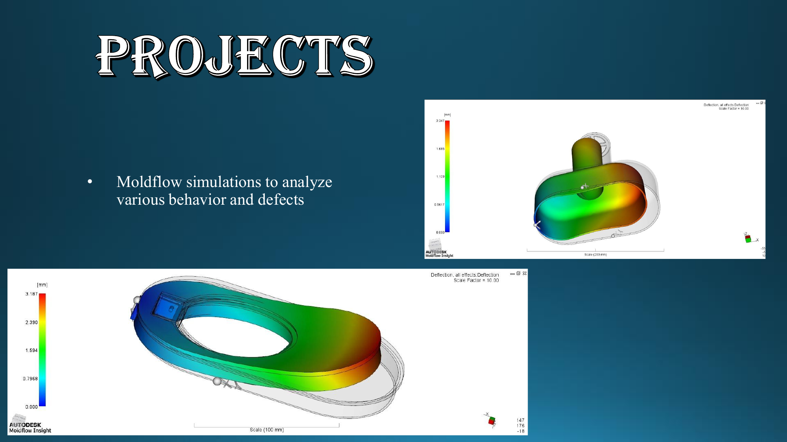

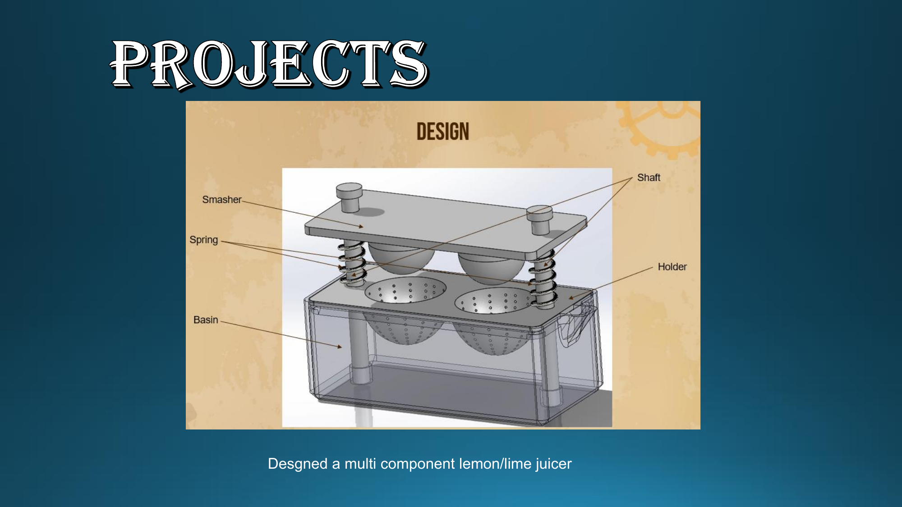
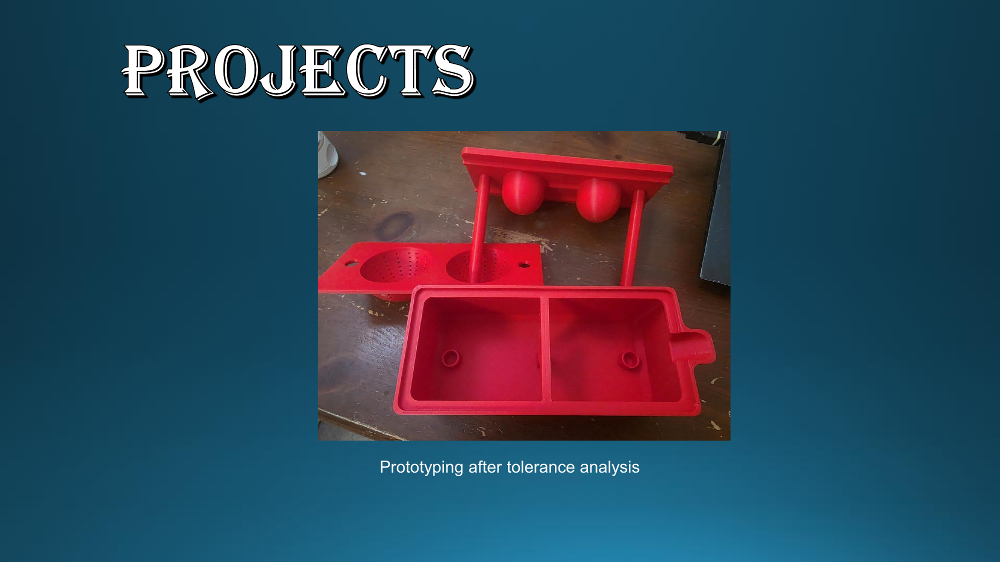
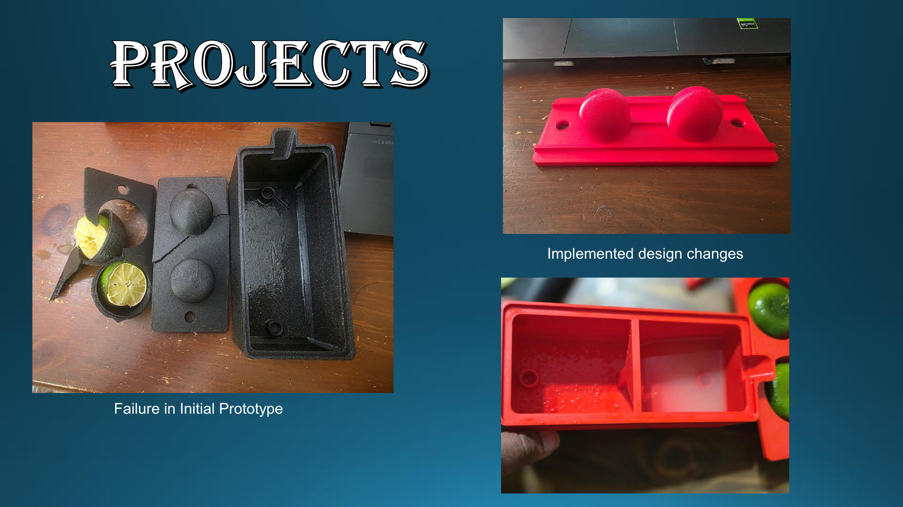
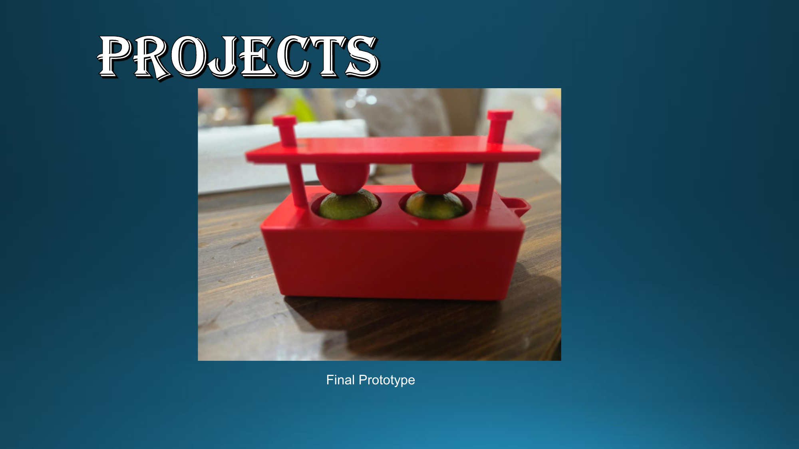

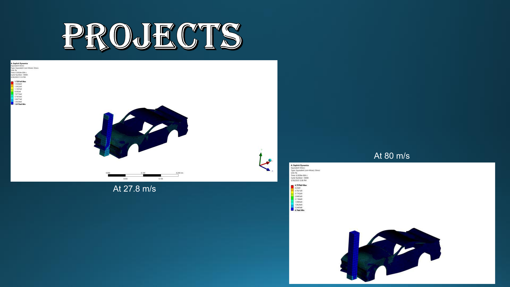
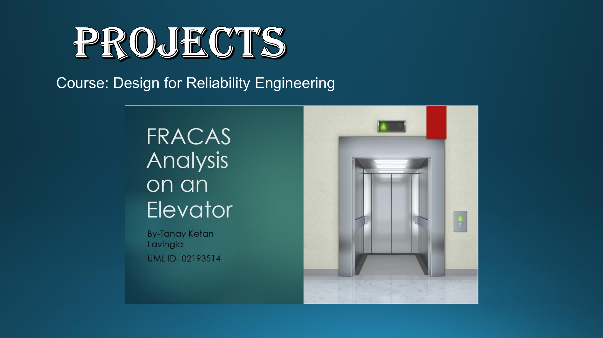

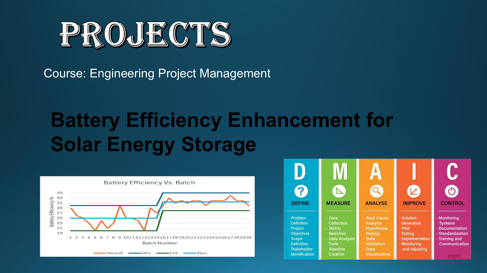
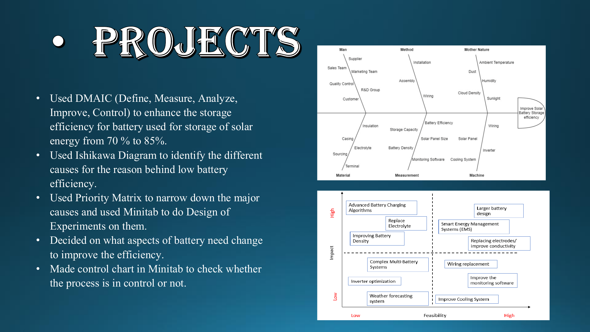
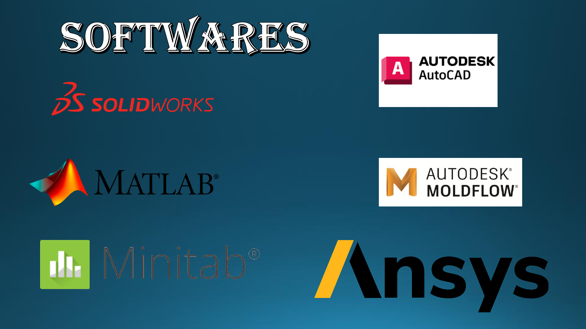
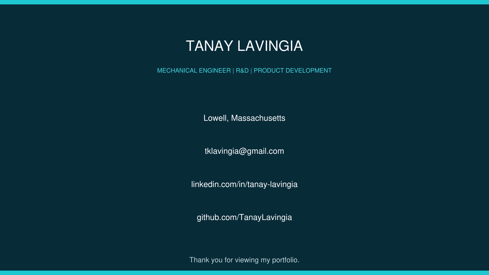